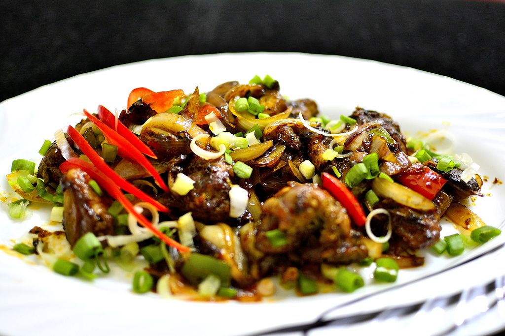

Chilli Chicken
created by gurkirat singh
Ingredients:
- 12 ounces of boneless Chicken and cut into small pieces
- 1 onion
- 1 green pepper and one yellow pepper
- 4-5 pieces of garlic and green chilli
- 1 cup of olive oil
- 1 spoon of salt
- 1 spoon of kashmiri powder
- 1 spoon of black pepper and chilli powder
- 3 spoons of Tomato sauce and soy sauce
- 2 spoons of yougurt
Instructions:
- Put all the chicken in a bowl and mix all the spices and sauces
- Chop onion and peppers.
- Heat the olive oil in a pan and once it's hot, fry the chicken until it looks golden.
- Use the same pan and throw the chopped onion, peppers, garlic and green chilli fry them until they turn golden.
- Add the tomato and soy sauce in the pan.
- Add chicken once the sauces are mixed up with the veggies.
- Fry all together for 1 high minute and then chilli chicken is ready.
- Serve hot fresh homemade and enjoy!
Chilli Chicken is my favorite recipe because it's easy to make and it only takes 10-15 minutes to get it ready and the great part is, it includes veggies and I enjoy the sweet and spicy taste of it.
